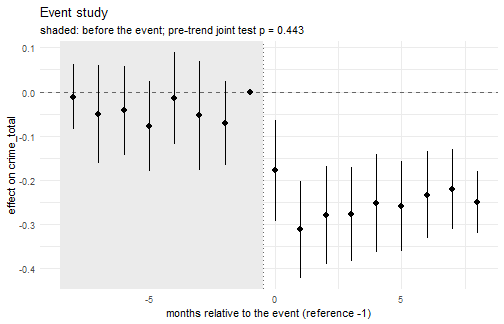

A force floods some areas with stop and search from a given month. Did recorded crime fall? This vignette works through the question on a simulated panel whose true answer is known, so that every estimate can be checked against it.
A panel with a known answer
sim <- lamp_simulate(
n_areas = 100, n_months = 30, design = "event",
effect = -0.25, base_rate = 30, missing = 0.05, seed = 2026
)
truth <- attr(sim, "truth")
c(
effect_on_affected_types = truth$effect,
effect_on_crime_total = truth$effect_crime_total,
treated_areas = length(truth$treated_areas)
)
#> effect_on_affected_types effect_on_crime_total treated_areas
#> -0.2500000 -0.2283871 50.0000000The effect is applied to every crime type except bicycle theft, so
the total moves by less than effect: that smaller number is
what an estimator on crime_total should recover. Bicycle
theft is left alone on purpose, to serve as a placebo outcome later.
Defining the treatment
tr <- lamp_treatment(
sim, "event",
date = truth$event_date, scope = truth$treated_areas, window = c(-12, 12)
)
tr
#>
#> ── streetlamp treatment
#> Type: "event"; column treat
#> Areas: 50 treated, 50 control
#> Event: user-supplied event on 2019-03-01, window -12 to 12 monthsTwo-way fixed effects
fit <- lamp_twfe(sim, "crime_total", tr)
fit
#>
#> ── streetlamp estimate: lamp_twfe
#> Outcome: crime_total; family: Poisson pseudo-likelihood on counts
#> Treatment: event; clustered by area
#> Identifying assumption: Parallel trends: treated and control areas would have
#> moved together in the outcome, net of area and month fixed effects.
#> Sample: 2850 area-months in 100 areas; 150 rows dropped for coverage.
#> Dispersion: 0.968
#> term estimate std_error statistic p_value conf_low conf_high
#> treat -0.226 0.0133 -17 8.44e-65 -0.252 -0.2The estimate is close to the truth, and the interval covers it. The print method leads with the identifying assumption and with the number of force-months dropped because the force did not submit, since both bear on whether the number means anything.
c(estimate = fit$coefficients$estimate[1], truth = truth$effect_crime_total)
#> estimate truth
#> -0.2259569 -0.2283871The event study
A single number hides the path. The event study estimates one coefficient per month relative to the intervention.
es <- lamp_event_study(sim, "crime_total", tr, window = c(-8, 8))
es
#>
#> ── streetlamp estimate: lamp_event_study
#> Outcome: crime_total; family: Poisson pseudo-likelihood on counts
#> Treatment: event; clustered by area
#> Identifying assumption: Parallel trends around the event: without it, treated
#> areas would have followed the control path, net of area and month fixed
#> effects. Pre-period coefficients test a consequence of this, not the
#> assumption.
#> Sample: 2850 area-months in 100 areas; 150 rows dropped for coverage.
#> Pre-trend joint test: p = 0.443
#> Dispersion: 0.969
#> rel_time estimate std_error conf_low conf_high p_value
#> -8 -0.0114 0.0378 -0.0854 0.0626 7.63e-01
#> -7 -0.0509 0.0570 -0.1627 0.0608 3.72e-01
#> -6 -0.0425 0.0515 -0.1435 0.0585 4.09e-01
#> -5 -0.0784 0.0517 -0.1796 0.0229 1.29e-01
#> -4 -0.0155 0.0534 -0.1201 0.0892 7.72e-01
#> -3 -0.0542 0.0633 -0.1783 0.0699 3.92e-01
#> -2 -0.0708 0.0485 -0.1659 0.0243 1.45e-01
#> -1 0.0000 0.0000 0.0000 0.0000 NA
#> 0 -0.1789 0.0582 -0.2930 -0.0647 2.13e-03
#> 1 -0.3130 0.0563 -0.4234 -0.2027 2.68e-08
#> 2 -0.2803 0.0569 -0.3919 -0.1687 8.53e-07
#> 3 -0.2778 0.0540 -0.3836 -0.1720 2.66e-07
#> 4 -0.2531 0.0571 -0.3650 -0.1411 9.36e-06
#> 5 -0.2593 0.0518 -0.3609 -0.1578 5.55e-07
#> 6 -0.2339 0.0499 -0.3318 -0.1361 2.80e-06
#> 7 -0.2212 0.0464 -0.3122 -0.1302 1.90e-06
#> 8 -0.2511 0.0360 -0.3216 -0.1805 3.03e-12
plot(es)
plot of chunk plot-es
The pre-period coefficients are flat, which is the visible form of the parallel-trends assumption.
What the pre-trend test is worth
A pre-trend test that does not reject is weak evidence, and how weak is computable.
pt <- lamp_pretrends(es)
pt
#>
#> ── streetlamp pre-trend diagnostic
#> Joint test of 7 pre-period coefficients: p = 0.443
#> Linear pre-trend the test would detect:
#> power slope bias_mean_post
#> 0.5 0.0104 0.0519
#> 0.8 0.0139 0.0697
#> The pre-trend test does not reject (p = 0.443), but it would detect a linear
#> trend of 0.014 log points a month only 80 percent of the time; such a trend
#> would shift the mean post-period coefficient by 0.07. Compare that with the
#> estimate itself before treating the test as reassurance.The power table is the part that matters. It reports the linear trend the test would catch half the time and four times in five, and the bias each would put into the post-period estimates. If that bias is the same size as the estimate, a passing test has told you very little.
Placebo tests
Three ways of asking whether the specification manufactures effects.
lamp_placebo(fit, type = "space", n = 100, seed = 1)
#>
#> ── streetlamp placebo: space
#> Real estimate: -0.226 on crime_total
#> 100 placebo estimates; share at least as extreme: 0
#> The real estimate (-0.226) is larger than 100 percent of the placebo estimates,
#> which is what a real effect looks like.
lamp_placebo(fit, type = "time", n = 10)
#>
#> ── streetlamp placebo: time
#> Real estimate: -0.226 on crime_total
#> 10 placebo estimates; share at least as extreme: 0
#> The real estimate (-0.226) is larger than 100 percent of the placebo estimates,
#> which is what a real effect looks like.
lamp_placebo(fit, type = "outcome", outcome = "bicycle_theft")
#>
#> ── streetlamp placebo: outcome
#> Real estimate: -0.226 on crime_total
#> 1 placebo estimate; share at least as extreme: 0
#> The real estimate (-0.226) is larger than 100 percent of the placebo estimates,
#> which is what a real effect looks like.Reassigning the treatment to random areas, or moving the date back into the pre-period, produces nothing like the real estimate, and bicycle theft does not move. Had any of them reproduced the result, the estimate would be measuring something other than the intervention.
Converting to crimes prevented
The question is usually asked in crimes, not log points. The conversion needs to know how many searches the surge actually added.
lamp_crimes_prevented(fit, sim, stops_added = 8, per_stops = 1000, seed = 1)
#>
#> ── Crimes prevented per 1000 searches
#> 797 [711, 883] on crime_total
#>
#> ── Assumption chain
#> 1. The treatment effect is -0.226 log points.
#> 2. The intervention added 8 searches per area-month.
#> 3. At the sample mean of 31.5 crimes per area-month.
#> 4. Parallel trends: treated and control areas would have moved together in the
#> outcome, net of area and month fixed effects.
#> 5. Recorded crime only: unreported crime and recording changes are not
#> separated.
#> 6. The average effect is applied at the margin, which ignores diminishing
#> returns.The assumption chain is printed with the number because every link in it can fail: the figure counts recorded crime only, applies an average effect at the margin, and inherits the identifying assumption of the estimate it came from.
When adoption is staggered
If areas start at different dates, this whole approach is wrong: relative-time dummies in a two-way fixed effects regression use already-treated areas as controls. The event study refuses rather than returning a biased number.
staggered <- lamp_simulate(n_areas = 60, n_months = 30, design = "staggered", seed = 11)
ad <- attr(staggered, "truth")$adoption
tr_stag <- lamp_treatment(staggered, "staggered", adoption = ad[!is.na(ad$adoption_month), ])
lamp_event_study(staggered, "crime_total", tr_stag)
#> Error in `lamp_event_study()`:
#> ! Areas adopt the treatment at 3 different dates.
#> ✖ Relative-time dummies in a two-way fixed effects regression are biased under
#> staggered adoption, because already-treated areas act as controls.
#> ℹ Set `staggered_ok = TRUE` to hand this to `lamp_did_staggered()`.The staggered vignette continues from here.